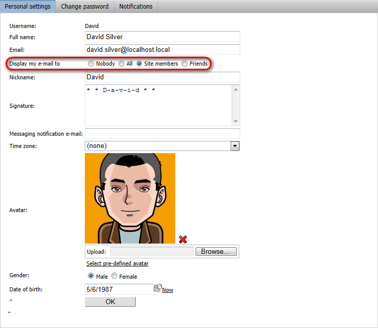
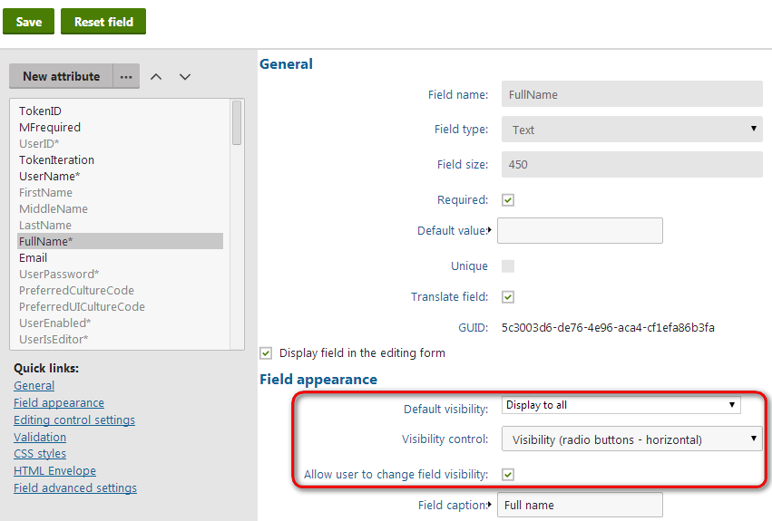
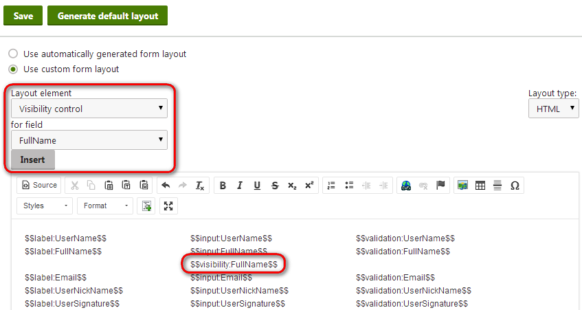
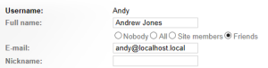

Allowing users to change the information they share
You can give users the option of changing the visibility of fields in their user profiles. This way, users can choose which information they share with others in the system.

Allowing users to choose visibility options of fields
Enabling field visibility control for form fields
You can add visibility selectors to any user profile fields:
If you are not familiar with the concept of alternative forms, see Creating alternative forms for more information.
Open the Modules application.
Edit the Membership module.
Open the Classes tab.
Edit the User (cms.user) class.
Switch to the Alternative forms tab.
The alternative forms of the User class represent various types of forms that the system uses to display and edit the data of user accounts. You can add visibility control for any of the forms.
For example, the following steps describe how to allow users to hide the Full name field in public profiles:
Edit the Edit profile alternative form.
Open the Fields tab.
Select the FullName field in the list.
Enable the Allow user to change field visibility option.
Choose Visibility (radio buttons - horizontal) as the field's Visibility control.
Click Save.

Editing the field visibility settings of a field
You also need to insert the visibility control into the form's layout:
Switch to the Layout tab of the alternative form editing interface.
If you are editing one of the default alternative forms, click Customize.
Select Use custom form layout.
Click Generate default layout. A default table layout appears in the editor.
Place the cursor into the desired location for the visibility control.
Select Visibility control as the Layout element and the associated form field (for example FullName).
Click Insert.
Click Save when you are done editing the form layout.

Adding visibility control into the layout of a form
Allowing field visibility control in web parts
Forms are displayed on websites by adding web parts onto pages. To allow users to control visibility of form fields, you need to prepare an appropriate alternative form and configure the properties of the web parts according to the following information:
User public profile
Form name - specifies the full name of the desired alternative form (cms.user.DisplayProfile by default).
Apply visibility settings - check to enable visibility control.
Use visibility settings from form - selects the form whose visibility settings the web part uses (if empty, the form specified by Form name property is used).
Custom registration form
Alternative form - specify the full name of the desired alternative form (cms.user.RegistrationForm by default).
My account
Form name - specify the full name of the desired alternative form (cms.user.EditProfile by default).
Allow user to edit field visibility - check to enable visibility control.
For example, to add visibility control to the account page on the sample Corporate site:
Open the Pages application.
Select the Special pages/User/My Account page in the content tree.
Open the Design tab and Configure the My account web part.
Make sure that the correct alternative form is assigned in the Form name property (cms.user.EditProfile for the Edit profile form modified in the example above).
Enable the Allow user to edit field visibility property.
Click OK.
If you log in on the live site and open the My account page, you can see the visibility controls for fields in the profile editing form.

Setting the visibility of a field on the live site